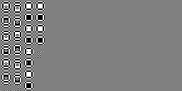

Tutorial¶
Use of this software is generally divided into two steps:
Performing static filter analysis
Calculating bit width requirements or generating test pictures
In the static filter analysis step, a mathematical analysis of a specific wavelet and transform depth is performed. The result of this analysis is a series of test patterns and abstract mathematical descriptions of the expected signal range.
In the second step, the output of the static analysis is specialised further for a particular picture bit width and quantisation matrix from which concrete signal ranges, test patterns and other information can be computed.
This software provides both command line tools and a Python API
(vc2_bit_widths) with which these tasks may be performed. The command
line interface will be demonstrated in the examples below.
Static filter analysis¶
Static filter analysis is typically performed using the vc2-static-filter-analysis command line utility like so:
$ vc2-static-filter-analysis \
--wavelet-index le_gall_5_3 \
--dwt-depth 2 \
--output static_analysis.json
In the example above, the static analysis is performed for a 2-level LeGall (5,
3) wavelet transform and written to static_analysis.json.
Asymmetric transforms can also be specified using the --wavelet-index-ho
and --dwt-depth-ho arguments.
For most wavelets and transform depths (as in the example above), the static
analysis process completes after a few seconds. For very large wavelets and
transform depths, however, the process can take several hours. To monitor the
progress the --verbose argument may be used.
The JSON files produced by vc2-static-filter-analysis follow the format
described in JSON file format. This file contains
theoretical worst-case signal levels in algebraic form along with test patterns
for every intermediate value array and filter phase. In this form, however,
everything is quite abstractly defined and we must process this file further to
produce more useful results.
Calculating bit-width requirements¶
The vc2-bit-widths-table command line utility may be used to compute a table of concrete signal ranges and bit width requirements:
$ vc2-bit-widths-table \
static_analysis.json \
--picture-bit-width 10 \
--output bit_widths_table.csv
In this example, we use results of the static analysis produced in the previous
step to find the signal ranges and bit widths when 10 bit input pictures and
the default quantisation matrix are used. (Custom quantisation matrices may be
specified using the --custom-quantisation-matrix argument.)
The bit_widths_table.csv file produced may be opened using any spreadsheet
package (e.g. Microsoft Excel) and contains a table as illustrated below:
type |
level |
array_name |
lower_bound |
test_pattern_min |
test_pattern_max |
upper_bound |
bits |
|---|---|---|---|---|---|---|---|
analysis |
2 |
Input |
-512 |
-512 |
511 |
511 |
10 |
analysis |
2 |
DC |
-1024 |
-1024 |
1022 |
1022 |
11 |
analysis |
2 |
DC’ |
-2047 |
-2046 |
2046 |
2047 |
12 |
analysis |
2 |
DC’’ |
-2047 |
-2046 |
2046 |
2047 |
12 |
analysis |
2 |
L |
-1537 |
-1535 |
1534 |
1535 |
12 |
analysis |
2 |
H |
-2047 |
-2046 |
2046 |
2047 |
12 |
analysis |
2 |
L’ |
-3071 |
-3069 |
3069 |
3071 |
13 |
analysis |
2 |
H’ |
-4094 |
-4092 |
4092 |
4094 |
13 |
… |
… |
… |
… |
… |
… |
… |
… |
synthesis |
2 |
L’ |
-26806 |
-4888 |
4888 |
26806 |
14-16 |
synthesis |
2 |
H’ |
-6929 |
-5167 |
5167 |
6929 |
14 |
synthesis |
2 |
L |
-26806 |
-4888 |
4888 |
26806 |
14-16 |
synthesis |
2 |
H |
-9513 |
-4345 |
4345 |
9513 |
14-15 |
synthesis |
2 |
DC’’ |
-26806 |
-4888 |
4888 |
26806 |
14-16 |
synthesis |
2 |
DC’ |
-30271 |
-4888 |
4888 |
30271 |
14-16 |
synthesis |
2 |
DC |
-30271 |
-4888 |
4888 |
30271 |
14-16 |
synthesis |
2 |
Output |
-15136 |
-2444 |
2444 |
15136 |
13-15 |
Each row in the table describes a different intermediate value array within a
VC-2 analysis or synthesis filter, as identified by the ‘type’, ‘level’ and
‘array_name’ columns (see Terminology). (If required, the table can be
broken down further into individual phases using the
--show-all-filter-phases argument.)
The ‘lower_bound’ and ‘upper_bound’ columns give an estimate of the worst-case signal levels which could appear in that array. This estimate is guaranteed not to under-estimate the true worst case signal levels but, in the case of synthesis filters, can sometimes be a significant over-estimate.
The ‘test_pattern_min’ and ‘test_pattern_max’ columns give actual signal values resulting from passing the test patterns generated during static analysis through a VC-2 encoder and decoder. In the case of the synthesis transform, the values reported are for whichever quantisation index produces the most extreme value.
The final column gives the number of bits required for a correct VC-2 implementation. This value may be given as a range in the case where the test patterns and theoretical worst case differ significantly. The true bit width requirement is guaranteed to lie somewhere within that range. (See Caveats).
Bounding quantisation indices¶
The VC-2 specification does not put an upper bound on the quantisation indices which might be used. The vc2-maximum-quantisation-index utility uses the theoretical bounds of the analysis filter (encoder) outputs to determine the largest quantisation index which could sensibly be used for a particular picture bit depth and quantisation matrix:
$ vc2-maximum-quantisation-index \
static_analysis.json \
--picture-bit-width 10
55
As before, custom quantisation matrices may be specified using the
--custom-quantisation-matrix argument, otherwise the default quantisation
matrix will be assumed.
Optimising synthesis test patterns¶
The vc2-optimise-synthesis-test-patterns command attempts to enhance the
synthesis filter test patterns produced by vc2-static-filter-analysis to
produce even larger signal values.
The test patterns produced by vc2-static-filter-analysis are the result of
a heuristic designed to be likely to elicit extreme signal values, but
worst-case signal levels are not guaranteed. For analysis transforms
(encoding), this heuristic performs very well, however synthesis transforms
(decoding) are more challenging due to the non-linearity introduced during
quantisation (see Non-linearity).
A stochastic optimisation algorithm is used by
vc2-optimise-synthesis-test-patterns to manipulate the initial test
pattern. This process repeatedly encodes, quantises and then decodes modified
test patterns using a full implementation of the VC-2 integer filtering
process. As a consequence, the optimised test signals are able to exploit
quirks of the integer rounding and quantisation errors introduced by a
particular codec configuration. As a result, the optimised test patterns are
very tightly matched to that particular configuration, but can achieve
substantial worst-case signal level increases.
The command may be used with its default parameters like so:
$ vc2-optimise-synthesis-test-patterns \
static_analysis.json \
--picture-bit-width 10 \
--output optimised_patterns.json
In this example, the test patterns will be optimised for codecs operating on 10
bit pictures and using the default quantisation matrix, with the resulting test
patterns being written to optimised_patterns.json. The --verbose
argument may be used to give a greater indication of progress.
The level of improvement achieved, and the algorithm runtime, are highly dependent on the careful tuning of the search parameters (see Choosing parameters). It may be expected that to produce useful improvements several hours of optimisation will be required.
The vc2-bit-widths-table command may be provided with the optimised test
patterns to generate a table showing the signal ranges and bit widths reached
by the optimised test signal:
$ vc2-bit-widths-table \
static_analysis.json \
optimised_patterns.json \
--output optimised_bit_widths_table.csv
Generating test pictures¶
The vc2-bit-width-test-pictures command may be used to generate a series of test pictures containing test patterns suitable for passing through a VC-2 encoder or decoder.
As a simple example, set of test patterns generated as above may be turned into a collection of HD test pictures like so:
$ mkdir test_pictures
$ vc2-bit-width-test-pictures \
static_analysis.json \
1920 1080 \
--picture-bit-width 10 \
--output-directory test_pictures
The generated test pictures contain test patterns packed together as illustrated in the example below:
The test pictures are split into analysis and synthesis test pictures.
The analysis test pictures may be fed directly to an encoder.
The synthesis test pictures are further split up into groups which should be quantised to different levels. These pictures should be individually encoded such that every picture slice is quantised with the specified quantisation index. These encoded pictures may then be fed to a decoder implementation.
See Test picture format and usage for a more detailed explanation of how these test pictures should be used.
Bundling analyses and test pattern data files¶
When a large number of analyses have been performed (using, e.g. vc2-static-filter-analysis), a correspondingly large set of analysis JSON files will also accumulate. These can be bundled together, along with any optimised synthesis test patterns test (from vc2-optimise-synthesis-test-patterns) into a compressed bundle file.
As well as substantially reducing the diskspace required to store the analysis files, specific analyses and optimised test patterns may be extracted on demand using a built-in index.
The vc2-bundle command may be used to create and query bundle files. For
example, if you have a number of static filter analyses with filenames like
static_filter_analysis_*.json and optimised synthesis test patterns with
filenames like optimised_synthesis_test_patterns_*.json, a bundle can be
produced using vc2-bundle create like so:
$ vc2-bundle create bundle.zip \
--static-filter-analyses static_filter_analysis_*.json \
--optimised-synthesis-test-patterns optimised_synthesis_test_patterns_*.json
Individual analyses may be extracted like so:
$ vc2-bundle extract-static-filter-analyses \
bundle.zip \
--wavelet-index haar_with_shift \
--dwt-depth 1 \
--output extracted.json
And so too can optimised synthesis test patterns:
$ vc2-bundle extract-optimised-static-synthesis-test-patterns \
bundle.zip \
--wavelet-index haar_with_shift \
--dwt-depth 1 \
--picture-bit-width 10 \
--output extracted.json